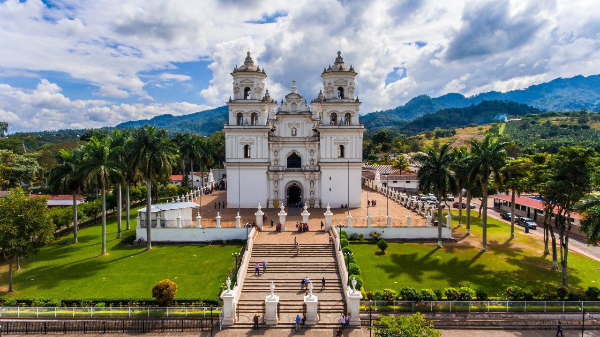

¿Quienes somos?
Nuestra historia
A comienzos del año 2019 como estudiantes universitarios en una plática en el cambio de curso tomando un atol de elote nos encontramos discutiendo cual sería el lugar al que escogeríamos para ir a viajar después de ganar el semestre y decidimos buscar en internet lugares dentro del departamento de San Marcos (pues en San Marcos estudiábamos) y nos encontramos la principal barrera para escoger el lugar.
La barrera informativa que nos encontramos fue que no podías ver todos los sitios de un solo departamento, cada vez que buscábamos nos aparecían más lugares en otros departamentos y deseábamos ver solo las opciones de un solo departamento para poder elegir una de ellas. Cabe destacar que existen buenas paginas informativas sobre Guatemala y otras que ofrecen guías turísticos para grupos de personas y para diferentes lugares.
A nuestra mente se nos vino la idea de que fuera bueno tener un espacio en el cual se pudiera elegir un departamento y únicamente visualizar todos los lugares turísticos de ahí, al igual que hospedajes, costos, información del departamento, y más.
Para desarrollar lo que teníamos en mente pensamos en desarrollar una página web y recabar toda la información posible de cada departamento. Tiempo después más compañeros de otros departamentos se nos unieron y decimos tener personas a cargo del departamento en el que residían y eso, así como se fue ampliando poco a poco y actualizando.
Y es así como nace Conoce guate.
Objetivo
Dar a conocer a personas nacionales y extranjeras información relevante, hoteles, lugares turísticos, mapa y una pequeña galería de fotos de cada departamento de Guatemala.
